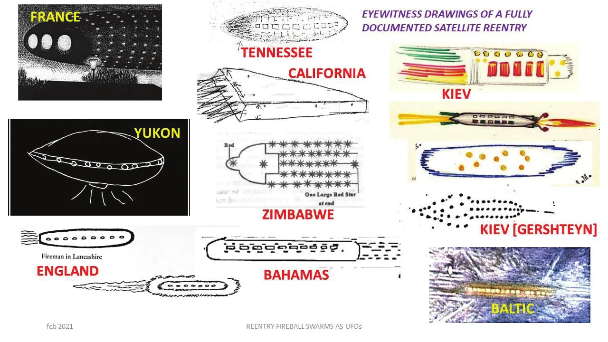
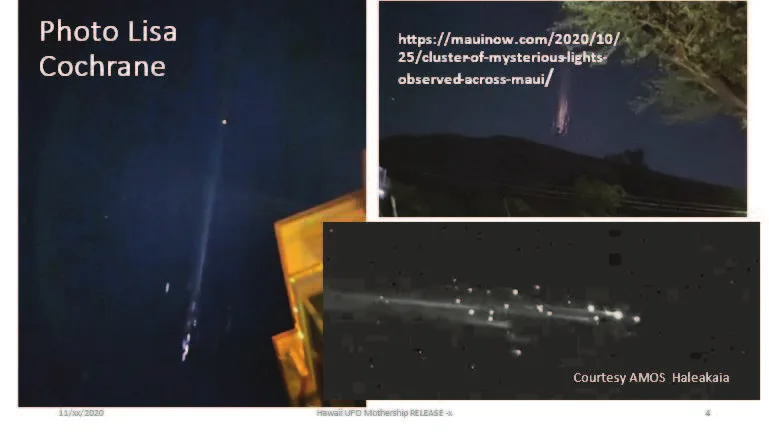
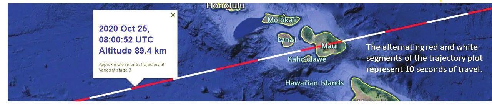
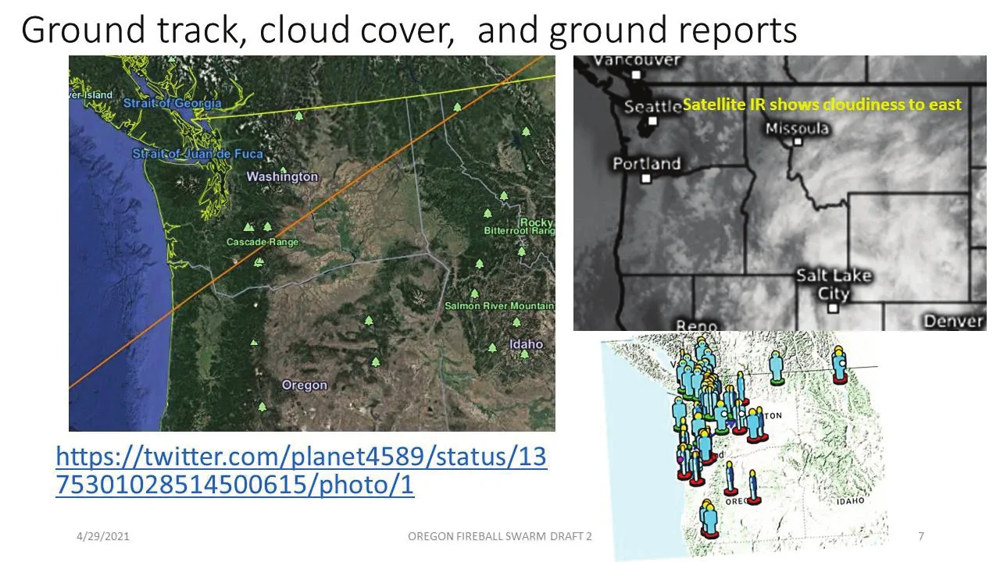
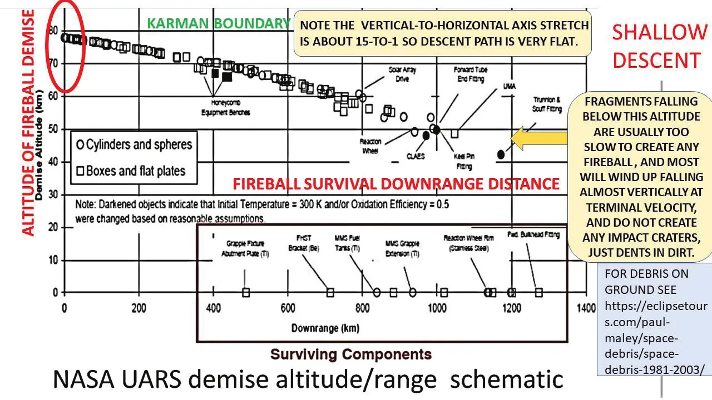
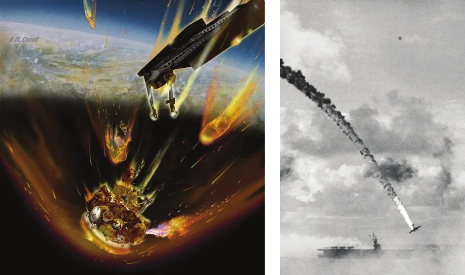
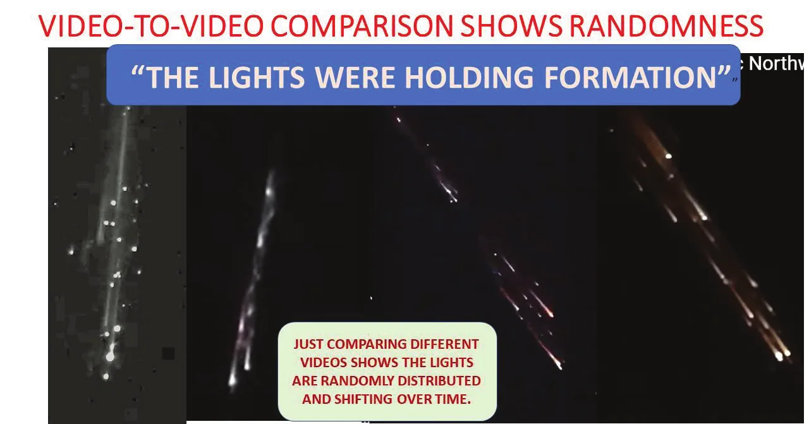
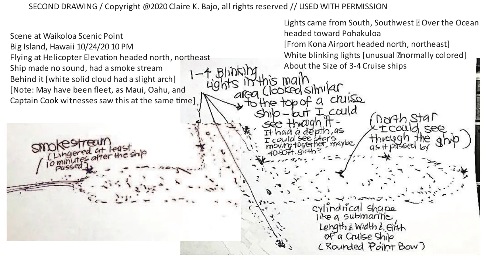
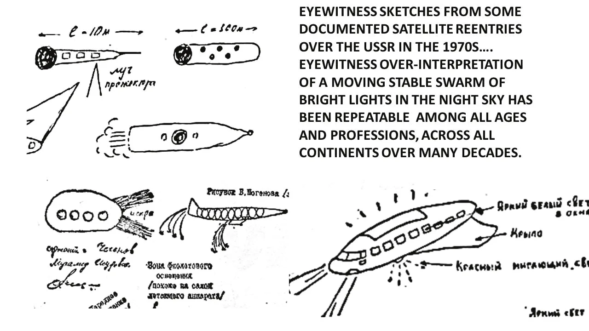
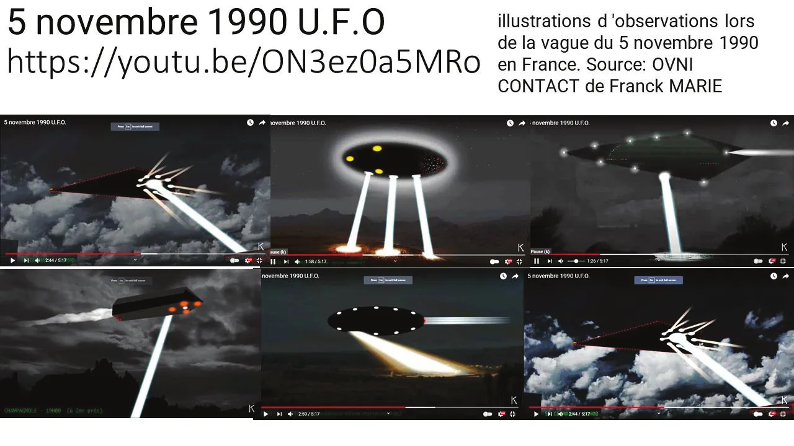

Explaining “mother ship UFO” reports becomes credible by showing how such misperceptions commonly have occurred all over the world from one particular stimulus that is thoroughly documented – satellite reentries – and could ALSO occur from similar visual stimuli such as aircraft formation lights or shallow-entry bolide meteors.
Space exploration has provided insights into secrets of nature that have baffled people for millennia. New vantage points, and new detection instruments, and well-designed exploratory projects, have together been fruitful all across the Earth, into and under the oceans, and now up and out across the Solar System.
But for one compelling spectacular mystery in the skies of Earth, the spaceflight-provided unveiling of one hidden mystery-explanation was entirely unintentional – and still widely overlooked by the still-baffled world public.
Humans have seen wondrous things in the sky throughout history, and even earlier. Gradually, curiosity led to comprehension of the mechanisms of weather, of motion and illumination of the moon and of bodies now called “planets,” and optics such as rainbows and sun dogs, and of flight [by other organisms and eventually by humans as well].
In recent decades, all across the planet, people have been reporting particularly unusual flying objects – the “UFO” phenomenon. While most can reasonably be explained as misidentifications of prosaic phenomena, one particular type of report has defied persuasive solution – the large-structured light-mounted “mother ship” configuration that crosses the entire sky horizon to horizon.

Until now – and it showed up accidentally, thanks to spaceflight. A totally new perceptual phenomenon has begun appearing in the past six decades of the “Space Age.” These are satellite atmospheric reentries leading to fiery fragmentation of the objects. While skimming the thin upper atmosphere, they traverse the sky on near-horizontal flight paths, the flaming pieces often remaining clustered together.
Recently, in over Hawaii and in over the NW USA, two additional spectacular night-time satellite reentries occurred randomly. Their location over a population well equipped with pocket cams and well-connected with the internet, created a torrent of reports of exactly the same nature as previous similar events. But they were much better documented, much more accessible for follow-up investigation, and consequently much more fruitful in providing definitive characteristics of the perceptual phenomenon.
The consistency and magnitude of common eyewitness misinterpretations continues to be amazing and sobering. Documenting the scope of these processes is a fundamental challenge to assessing adequately the accuracy of any future witness descriptions of startling sky manifestations of any origin – natural events, human technology [missile/space activities, aircraft, weapons systems, etc.], or potentially truly anomalous phenomena highly deserving of serious attention. But it’s a literally heaven-sent opportunity.
This report will follow a two-stage approach, at first practical and then speculatively theoretical. First, to focus on events, it will examine the two recent fireball swarms to document in what ways many witnesses misinterpreted it. More importantly, it will assess WHY such misinterpretations were so common, largely based on mass public misunderstanding of basic features of space flight and especially atmospheric reentry.
Secondly, it will examine the theoretical basis for explaining WHY such misinterpretations have been – and still are – so widespread. The witness reaction reaffirms the widespread and age-old human propensity to “Rorschach” pre-favored explanations onto once-in-a-lifetime ambiguous aerial apparitions, demonstrating creative “confirmation bias” in the sky. There are profoundly important evolutionary and cultural factors that encourage such a pattern.
Lastly, we will examine lessons of these still-poorly-appreciated perceptual processes that can allow researchers of future similar apparitions [and not only reentry fireball swarms but other technological sources of a grouping of bright lights moving in formation across the night sky]. These can be applied both to future events, and by historians, to many still-puzzling past events of a similar nature.
The source of the Hawaii fireball swarm was the reentry of the third stage of the Chinese CZ-3B booster [2008-055B] launched , delivering Venezuela’s “Venesat-1” communications satellite. The payload remains in orbit, but this booster stage’s orbit slowly decayed, and a reentry warning had been issued. The actual reentry was about an hour past the pre-reentry prediction interval, not unusual.

The predicted ground track for the propagated forward motion to the time of the observed fireball swarm precisely put the path right over Maui, moving almost due west to east, as actually observed. Any surviving debris impact would have been into the Pacific Ocean east of Hawaii.

On the ground, this is what the startled witnesses were perceiving. For example, Kimberly Lani [posted , then deleted] had written: I saw it, over the open Molokai sky. We don’t have much light at night, so it was very clear
viewing. It was a massive thing, coming in from south/west direction, headed northeast. I saw what looked like
flaming lights in the front, almost like a point. The lights all together, resembled a triangular aircraft shape.
The mid-section had 2 bands of lights in a rhythmic circular pattern. It was quite massive, since I don’t know how
far away it was....my best description was saying it was as big as a small neighbor Hawaiian island. Like Lanai.
That’s just what I could relate it to. There was no noise around it, that we could hear. I swear, I saw what looked
like an energetic behind it. Not yellow in flame but maybe like a smoky-type coloration. Definitely something there
from the rear, in contrast to the night sky.
Other eyewitnesses appended comments on videos that had been posted on youtube.com:
The way the lights twinkle and appear to bank left doesn’t look like individual objects. It looks like one solid object.
I saw it too, it flew right over my head, the lights were different colors, and it flew from sea towards land… not like they say rocket booster disintegrating over the water… this thing was a real huge spaceship... and it flew lower than on the picture here... and there was a slight sound and a kind of tail behind it like steam...how would a rocket booster after 12 years have stable lights still functioning? And this craft was not falling at all it was maneuvering...and it had a certain energy to it also.
I took my dog to the yard in my Nuuanu home and looked up to see what looked like a blimp-size object moving from Honolulu Airport to the North-Northeast covered in lights.
I saw it too. It flew directly over head of me as well. They are definitely not telling the truth after seeing it with my own eyes. I was so bummed that astronomer came out and tried to speculate... if he would have seen it, he wouldn’t be saying it was a rocket booster. Thing was so low, silent, slow and had adjacent lights all traveling at the same speed, blinking as opposed to burning off. I have no idea as to what it was, but it sure isn’t what they are telling us.
The fireball swarm was also recorded on several all-sky survey cameras, but the best identifying observation was made from Waikoloa Scenic Point on the big island. There, the keen-eyed observer Claire Bajo noticed the fireball swarm pass left-to-right directly across Polaris [the North Star], thus giving an elevation angle of 20 degrees. Since observers on Maui 100 miles (160 km) away also saw it, but passing directly overhead flying WSW to ENE, simple trigonometry gives an altitude of ~40 miles (64 km).[Editor’s note] Waikoloa lies about 95 to 130 km (60 to 80 miles) from the various parts of Maui, not 160 km. With an elevation of 20 degrees, such a horizontal distance gives an altitude of about 35 to 47 km (22 to 29 miles) rather than 64 km. The 89.4 km shown on the trajectory plot above is the predicted altitude of a point of the path west of Lanai, before it reached Maui. This is exactly the level that typical satellite fragments are brightest on their long shallow descent. And that ground path was exactly the one pre-calculated for the demising satellite rocket.
Similarly, over Oregon: a Falcon 9 second stage from the 2021-017 Starlink launch [] failed to safely deorbit as planned, so it decayed naturally at approximately UT https://www.zarya.info/2021#017 NORAD #47782 (2021-017BN) listed it as “Falcon 9 RB.”
Here’s how many people perceived it:
A slow moving object with man-made lights, Cigar shaped, Rounded on each end. With what looked like windows on it.
This ship went right over me. I had full vision of the lights, beams, and metal like structure that surrounded the lights.
I live here in Brookings Oregon....it looks like a Huge ship.
To me it looked like a train in the sky … It was absolutely massive.
In my personal opinion it’s one big craft, but who knows.
How the rocket goes falling horizontally? Lierssssss.
Since when does anything falling from the sky travel horizontally?
How can you justify all this lights are grouped together parallelly? and why all lights have the same speed?
Those witnesses [and other readers of their accounts] who rejected the satellite reentry explanation did so for very specific reasons that are susceptible to analysis. The two main reasons, which this report will address in detail, are that the object flew level across the sky under obviously controlled flight, and that the appearance was consistent with a structured physical object with mounted lights of some sort, blocking background stars and looking unlike any previously known rocket or satellite.

Other reasons, addressed in longer reports cited in the Bibliography, included that the object was very low and close, that the motion was too slow, and often turned or even stopped, that no warning was issued, and that no debris was found Oberg, James: Jimmy Carter ‘UFO’ was NASA barium rocket Oberg, James: Top Soviet 1967 ‘UFO flap’ was space-to-ground warhead tests Oberg, James: 1970-1980a South American UFOs caused by Russian space launches Oberg, James: Space Age ‘space clouds’ from worldwide rocket launches Oberg, James: California missile/rocket launches spark UFO reports Oberg, James: November 7, 2015 Trident SLBM launch off California Oberg, James: Norway December 2009 ‘spiral UFO’ was missile test Oberg, James: Australia June 2010 ‘spiral UFO’ was Falcon-9 rocket Oberg, James: China July 2017 UFO was military missile test Oberg, James: July 2, 2017 China’s Long March launch failure seen from the PhilippinesThe Bibliography lists a selection of the author’s work related to witness (mis)perceptions of space/rocket events. All web articles in it and in the body were accessed on ..
Public mental images of “falling satellites” are widely shaped by false analogy with “falling aircraft,” exacerbated by the common media spurious analogy of anti-satellite weapons as “shooting down” enemy satellites. But even when shattered, the fragments maintain their forward orbital motion by their own momentum.


The “but-it-flew-LEVEL” objection seems based on a very widespread public misconception about why satellites remain in space after launching. Somehow the over-simplified explanation is that the rocket flies up into space and escapes Earth’s gravity, so it can drift through space in whichever direction it chooses to steer.
But as Isaac Newton first explained more than three hundred years ago, an object “in orbit” just above Earth’s surface is still firmly in the grip of Earth’s gravity which is relentlessly pulling it down. Even as its path curves toward the ground, the ground itself is curving away and down, because Earth is round. If the object is moving fast enough, it doesn’t hit the ground at all.
Impeded by drag from the very thin upper atmosphere, a satellite slowly slips lower until about 40 miles (64 km) up it gets into enough wind resistance to lose its own speed more rapidly, and no longer can “fall over the horizon.” The significance for the satellite reentry flight path is that the tremendous horizontal speed [about 25,000 ft/sec, or 7,600 m/sec] will carry it way across the sky while it is descending ‒ not straight down. By the time it’s falling vertically, it’s too slow to surround itself with flames, it’s too small to be seen in the sky.
The “appearance” of the descending object is a fascinating subject. The critical context of that perception is that the sky is dark, and the most striking visual impression is a group of lights moving in formation as if attached to a very large structure. That is a compelling impression that strongly suggests an explanation that resides already in the observer’s memory.
A typical large satellite reentry goes through several visual stages. At the beginning of the reentry phase, decaying satellites are skimming the upper atmosphere with tremendous forward speed, and they don’t begin to visibly DESCEND until long after they’ve fireballed into fragments, which occurs between 50-60 miles (80-97 km) up (the “Karman Boundary”), and a few miles (kilometers) lower. The satellite, and soon after, the fragments of the satellite, are still moving horizontally at about Mach 25.
A glow appears in front of the object in the hypersonic shock zone, and soon many still-glowing molecules trail behind the main object. At some point the object breaks apart under enormous deceleration stress. Individual fragments continue by momentum along near-parallel paths each with own flame trail. Pieces break off and fall forward, along parallel paths, in a cloud of sparks and dazzling stars, multi-colored from different types of metals, and flaring from explosions of, or heat-induced spraying from fuel tanks – especially with quick-decaying booster stages in low, unstable orbits, within a few hours [or a day or two] of the original launch, before residual propellants have been purged, or have leaked away.
The glow is not from “flames” or combustion but from molecular disruption of atmospheric components [oxygen and nitrogen] and recombination. The trail lengthens as the quantity of disrupted molecules increase. As the speed lowers, the amount of disrupted molecules decreases, and the tails die out while glow from the leading shock wave continues. At this stage the fireball swarm looks like a pattern of simple lights. As irregular fragments tumble, each object’s leading shock wave glow can flicker.
With gradual slowdown, the flame trail diminishes and fades while each fragment’s smaller leading shockwave fireball continues to glow. That final fireball dies out while the objects are still very high, still moving on a shallow decline.
This mass of lights and streaks moves, almost “in formation,” across the sky in total silence, another eerie feature. At its speed during this phase, it can take one or two minutes to cross the sky. Once sufficiently slowed, the fragments no longer have enough energy to induce airglow. Only after several minutes more would any sonic boom reach ground viewers.

One shortcoming of the profusion of pocket cams is that low-light-level moving images can be jittery and overexposed, losing detail that could help characterize the initiating event. That’s why it’s important for investigators to actively encourage [even pester] eyewitnesses to make drawings of the detail their eye-brain system perceived in the fast-moving glary fly-bys. Then you get amazingly useful details such as this:

One point that needs to be stressed is how counter-intuitive it seems that a visual apparition as spectacular as a fireball swarm can so consistently and similarly be misinterpreted by witnesses of all cultures, education, profession, and experience. It’s worth repeating – such a process is both learned, and innate, because it’s ‘survival-positive’. The visual cortex accepts raw images and instantly selects ‘best fit’ to past memories, both real life and learned from recorded images. In some professions, witnesses’ minds leap to the most dangerous potential interpretation, as a matter of life and death – if the interpretation is NOT dangerous, a positive response is just embarrassing, but if it were dangerous, NOT reaching that interpretation could be fatal.
In assessing those witness comments, it must first be recognized that similar descriptions have been coming in from the identical visual stimulus – a flaming swarm of fireballs from a disintegrating heavy satellite skimming earth’s upper atmosphere – since the earliest years of the Space Age. All over the world, all cultures, all professions, all ages, and awesomely similar.

As already stated: the witness’s misperception is NOT a failure of eyesight or of brain or of rationality – it actually reflects a survival-positive adaptation to sudden surprising ambiguous visual perceptions in which an observer must amidst urgent uncertainty quickly pick out from existing memories what threat or opportunity the perceived object offers so that fast response can be useful, even life-critical. False-positives are usually low-cost, so they are a preferred when-in-doubt strategy. At least, the genetic predisposition to this trait seems to survive to reproduce more offspring much more often over generations.
By adding many more similar events, both earlier and later in time, and especially the visually overwhelming ‘Kiev event’ [now ‘Kyiv’], investigators have now established the consistent, repeatable perceptual results beyond any reasonable doubt. Across decades of time, on all continents, witnesses of all professional and educational levels, of all ages and social levels, seem to generate memory-based fill-in interpretations of bright fireball swarms in a startlingly similar format.
In a more recent compilation of reentry fireball swarms (Printy, ) Tim Printy: The Rocket’s Red Glare, we read:
After examining many reports of known fireballs and re-entering space debris, I have discovered that the average observer can make many mistakes in their observations. Many will claim that the fireball landed just over the next ridge, often overestimate apparent size, and sometimes get their sense of direction incorrect. UFOlogist John Keel once wrote:
Early in my own investigations I discovered that the average witness could not even pinpoint true north- even when he or she had lived in the area all their life...Estimates of altitude are much more difficult to make even for experienced pilots. And at night it is almost impossible to judge the altitude of an object (usually just a light of unknown size...estimates of UFO speeds are usually inaccurate and altitude estimates are questionable unless the object appears near something of a known altitude - such as a mountain or a conventional aircraft.John Spencer & Hilary Evans (eds.): Phenomenon: Forty Years of Flying Saucers, New York, Avon, , pp 187-188
The degree of perceptual elaboration of many individual reports still seems to defy “common sense,” and “a priori” would be patently incredible if suggested for a UFO. Only faced with a thoroughly documented range of perceptions for a subsequently fully-explained stimulus, is it “believable.” It can happen because it did, again and again. Here’s another example from France in , of a Soviet space booster reentry – the “searchlights” are an occasional feature of recently-launched rocket stages presumably venting leftover fuel heated by the reentry:

For that reason, the ‘Kiev event’ [now ‘Kyiv’] may be the most important double-blind “control experiment” in the history of UFO studies, and it was completely accidental – and overlooked. I only received a copy of it in from a Spanish colleague, Vicente-Juan Ballester-Olmos. A team of technically-trained citizens, who did not know the prosaic explanation, interviewed more than a hundred witnesses and had them make drawings of what they had perceived. It turned out to be a Soviet booster rocket reentering from low orbit.
Its application to other reports of large structured silent light-equipped craft is both unavoidably obvious and revolutionary in its implications, because satellite reentry fragmentation is not the only potential way to create a grouping of bright lights in night sky. Other known sources include [not exhaustive] grazing meteors [much faster], military jet formation, mass parachute flare drop, spoofing private pilots, Chinese lanterns, and orbiting formations [e.g., NOSS].
It’s helpful to recognize the scope of the fundamental challenge to assessing adequately the accuracy of any future witness descriptions of startling sky manifestations of any origin – natural events, human technology [missile/space activities, aircraft, weapons systems, etc.], or potentially truly anomalous phenomena highly deserving of serious attention.
The spectacular nature of such events is very attractive to visual media such as internet YouTube, etc. But in general, more respected UFO research sites accept most satellite reentry explanations. Solution of this unique category of reports does not reflect on the genuine interest [even “unexplainability”] in other types of UFO reports, nor on the legitimacy of any of the most common offered general explanations for them.
Solution of this category of reports DOES reflect on the judgment of those advocates who imprudently accepted and promulgated the “unexplainability” of such events. This should reflect on their assessments of all other reports that they have similarly endorsed.
As long as ufology [“UFO studies”] remains mired in these kinds of spurious reports, it hinders its acceptance as a legitimate science-based field of inquiry.
The “coincidence” of a documented satellite reentry fireball swarm moving at the same time at the same rate in the same direction as the occasionally reported “UFO mother ships” becomes significant now that it can be shown to have occurred again and again all over the world.
It’s certainly correct to realize how it is difficult, “a priori,” to imagine how such once-in-a-lifetime apparitions can spark such “giant mothership” misperceptions. It definitely “defies common sense.” But that’s “earth-based” logic, and space is literally “unearthly.” Nonetheless, the records show that satellite reentries have done exactly that, many times, and in a startlingly reproducible manner with an uncanny similarity of results.
These data are trying to tell us something that we didn’t start out knowing, and we didn’t even KNOW that we didn’t know. What we THOUGHT we knew, wasn’t so. For many people, including many witnesses as well as enthusiasts of the non-explainability of such reports, it still is something they clearly do not WANT to know.
The only productive response is to try to be open to reality’s unambiguous implications, even if it is showing us evidence for what we don’t want to be true.
Offering this explanation should not be misinterpreted to believe it implies every witness to a fireball swarm [of any origin] misleads themselves into perceiving a “mothership UFO.” Past collections of witness testimonies show there is a gradient of interpretations from starkly separate lights all the way through a sharp-outlined large structure, for the very same raw visual stimulus.
The eagerness with which UFO-related interpretations spread across the Internet, along with vehement rejection of the rational prosaic cause, sadly reflects a continued reality-defiant corner of popular culture and significantly diminishes the chances of genuine progress in understanding potentially extraordinary [or deliberately concealed] causes of other strange reports.